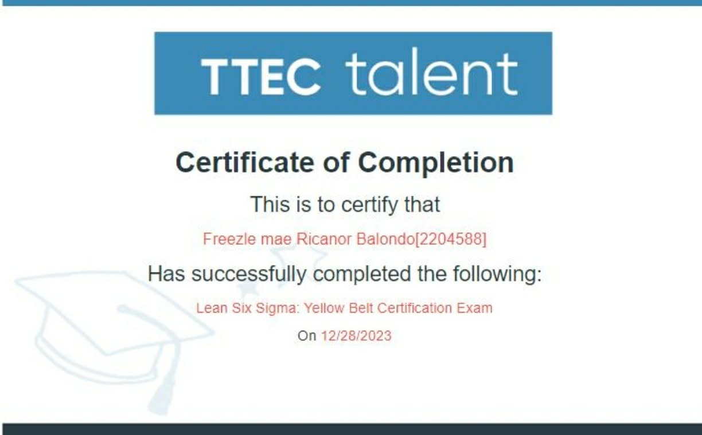
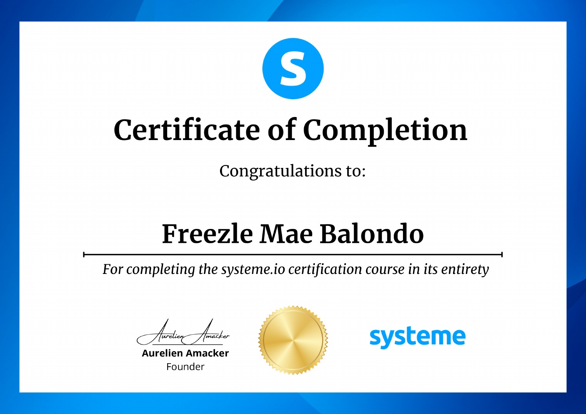

Calendar & Inbox Management
Prioritizing requests, coordinating meetings, protecting focus time, drafting responses, and keeping communication organized.
Executive Assistant • Operations Support • Customer Success
I help executives save time, stay organized, and improve daily operations through dependable administrative support, customer care, and quality-focused execution.
01 — About
My career was built across customer service, sales, retention, and quality assurance. That experience taught me how to spot operational gaps, communicate clearly, protect service standards, and keep work moving without constant supervision.
I bring an analytical eye to calendars, inboxes, client communication, documentation, and reporting—so leaders can focus on decisions that grow the business.
LocationCaloocan City, Philippines
LanguagesEnglish & Filipino
Work styleAsync • Real-time • Hybrid
AvailabilityFull-time • Remote
02 — Services
Prioritizing requests, coordinating meetings, protecting focus time, drafting responses, and keeping communication organized.
Professional support through phone, email, and chat, including issue resolution, follow-ups, escalation handling, and relationship care.
Interaction reviews, compliance monitoring, actionable feedback, performance tracking, and process improvement support.
SOP creation, task tracking, data organization, reports, follow-up systems, and accurate administrative records.
03 — Results
04 — Education & Credentials
Manila Central University — an academic foundation that strengthened my analytical thinking, accuracy, discipline, and attention to detail.

Certified in process thinking, root-cause analysis, efficiency, and continuous improvement.
View full certificate →
Completed training in digital workflows, online business systems, automation, and funnel operations.
View full certificate →05 — Gallery
A balanced look at the professional, confident, and adventurous person behind the résumé.
Images suited for recruiters, clients, and business profiles.
A glimpse of my personality, love of travel, and adventurous side.
Ready for dependable support?
I’m available for full-time remote opportunities in Executive Assistance, Customer Success, Quality Assurance, and Operations Support.